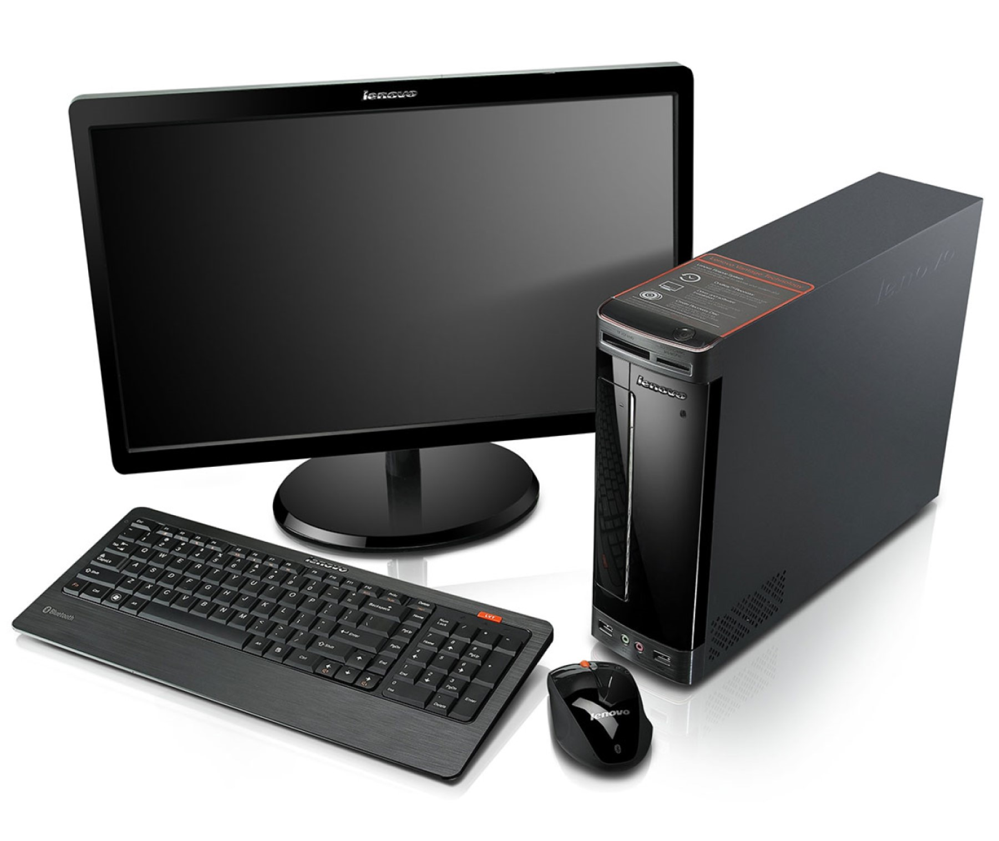

Что такое компьютер?
Компьютер – это электронно-вычислительная машина Компьютер может быть как отдельным блоком, так и состоять из нескольких взаимосвязанных устройств.
Может быть мульти-задачным, или для решения специфических узкоспециализированных задач. Термин чаще употребляют для обозначения вычислительной машины, собранной из аппаратного обеспечения (железа) в системном блоке.
Но, его можно смело употреблять и для ноутбуков, смартфонов и планшетов. Все эти — мини-компьютеры.
Компьютерная система — это устройства, собранные в одну систему для решения определенных задач. Это могут быть не обязательно именно ПК.
Компьютер является именно электронно вычислительной машиной и собирается из нескольких разных устройств, которые называются аппаратным обеспечением. Собранные вместе в системном блоке они и составляют ПК.

Но не стоит забывать, что каким бы хорошим помощником, ни был компьютер, он может нести непоправимый вред здоровью человека!
Длительная, неправильно организованная работа за компьютером, способна повысить риск развития различных заболеваний органа зрения, мышц, суставов, внутренних органов и систем организма.
Из-за работы за монитором компьютера страдает зрение человека. Нередко при длительной работе за компьютером глазные мышцы перенапрягаются, человек гораздо реже моргает, роговица не увлажняется должным образом, появляются болезненные ощущения в глазах, становится больно моргать, ими шевелить, появляется жжение, либо ухудшается четкость зрения и двоится в глазах.
К переносным компьютерам относятся ноутбуки. Они могут работать где угодно, имеют маленькие размеры и вес. Можно решить, что они гораздо лучше стационарных, однако это не совсем так. Во-первых, ноутбуки существенно дороже обычных компьютеров. А во-вторых, без подключения к электричеству они работают не более 10 часов.
Понятие ПК обозначает «персональный компьютер». Произошло от английского PC — personal computer. Ранее слово «персональный» уточняло, что устройство используется в личных, а не промышленных целях.
Сейчас ПК применяют не только в качестве вычислительного комплекса, но и как инструмент для доступа к информационным, офисным, игровым ресурсам и мультимедиа. Персональным компьютером является и десктоп, и моноблок, и ноутбук — все, на чем пользователь работает лично.
Вверх